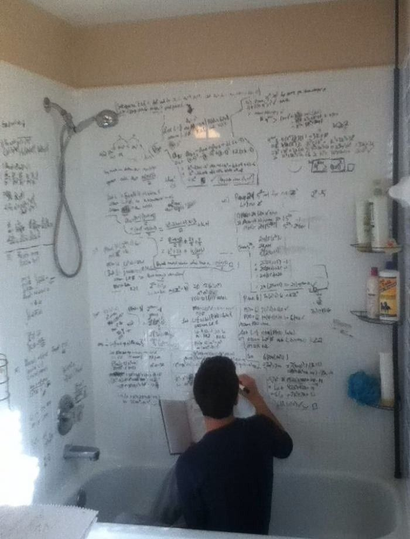

စာကျက်တိုင်း စာမရနေတာ ဘာကြောင့်လဲ?
ဒီကိစ္စကိုလက်တွေ့ကျကျပြောဖို့အတွက်
ပိုက်ဆံ၅၀၀တန်နဲ့ စလိုက်ရအောင်
၅၀၀တန်မှာပါတဲ့
ခြင်္သေ့က ဘယ်ဘက်ကို မျက်နှာမူတာလဲ
ဘယ်ဘက်လား ညာဘက်လား?
ပိုက်ဆံ ၅၀၀တန်ကို
အကြိမ် ၁၀၀ မက
လူတိုင်း မြင်ဖူးကြတယ်
သုံးလဲ သုံးဖူးတယ်။
ဒါဆိုဘာလို့
အလွယ်တကူ
မသိရတာလဲ ? …..
(1) စာကျက်တိုင်း စာမရနေတဲ့ ပြဿနာ
ကျနော်တို့ ငယ်ငယ်တုန်းက
လေ့လာသင်ယူမှုတွေ လုပ်တဲ့အခါ
အကြောင်းအရာတစ်ခုကို
ထပ်ခါထပ်ခါ မြင်ဖူး
ထပ်ခါထပ်ခါ ကြားဖူးနားဝရှိလာရင်
အဲ့ဒါကို အလွတ်ရလာမယ်လို့
သိခဲ့ကြရတယ်။
ဒါကြောင့်လည်း
အော်ကျက်ကြတယ် အော်ဖတ်ကြတယ်
ထပ်ခါထပ်ခါရေးတယ်။
ဒီနည်းလမ်းတွေက တကယ်အလုပ်ဖြစ်တယ်
မဖြစ်ဘူးဆိုတာ
စာမေးပွဲခန်းထဲက သင်ကအသိဆုံးဖြစ်မှာပါ။

(2) ရသွားပြီလို့ ထင်ပေမယ့်မရနေတဲ့ပြဿနာ
စာရတယ်လို့ “ခံစားရပေမယ့်”
တကယ့်လက်တွေ့မှာ
စာရ မနေတာကို
Illusion of Learning လို့ခေါ်ပါတယ်။
အခု ၅၀၀ တန်ကိစ္စလိုပေါ့။
ဒါတောင် ကျောဘက်မှာ ဘာပုံလဲလို့
မမေးရသေးဖူးနော် …
စာမေးပွဲမှာ မေးတဲ့မေးခွန်းတွေက
“ဒါရတယ်လို့ ခံစားရလား” လို့
မေးတာမျိုးမဟုတ်ဘဲ
အကြောင်းအရာကို “တိတိကျကျ”
ချရေးခိုင်းတာဆိုတော့
ဂွမ်းပါလေရော။
(3) ဘာကြောင့် ဒီလိုဖြစ်ရတာလဲ?
ဘာလို့ဒီလိုဖြစ်ရတာလဲဆိုတော့
ဦးနှောက်မှာ အရေးကြီးဆုံးတာဝန်
(၃) ခုရှိလို့ပါ။
- လူကို အသက်မသေအောင်ထားဖို့
- လူကို အသက်ရှင်အောင်ထားဖို့
- 😗 အင်းဟုတ်တယ်တူတူပဲ အပေါ်ကဟာပဲ
ဒီအလုပ်ကို လုပ်ဖို့အတွက်
ဦးနှောက်ရဲ့ မှတ်ဉာဏ်တွေဟာ
Shortcut (ဖြတ်လမ်းနည်း) ကို
သုံးရပါတယ်။
(4) Shortcut သုံးတဲ့ ဦးနှောက်
အသက်ရှင်ဖို့အတွက်
ရုတ်တရက် ဖြစ်လာတာတွေကို မစဉ်းစားဘဲ
တန်းတုံ့ပြန်နိုင်ဖို့လိုပါတယ်။
ဥပမာ
ကားမောင်းနေရင်းနဲ့
တိုက်မိတော့မယ်မိရင်
“ငါဘရိတ်အုပ်ရမလား?”
“ဘယ်လိုလုပ်ရမလဲ?” ဆိုပြီး
စဉ်းစားတွေဝေမနေဘဲ
ဖြစ်လာတာကို တန်းတုံ့ပြန်လိုက်ဖို့ လိုပါတယ်။

(5) စာကျက်တဲ့နေရာမှာ Shortcut တွေ သုံးလာရင် ဆိုးကျိုးအနေနဲ့က
မတိကျတာတွေဖြစ်မယ်။
စာတွေ ကျန်ခဲ့တာတွေဖြစ်မယ်။
စာတွေမေ့တာတွေဖြစ်ပါမယ်။
ဒါကြောင့် မမေ့သင့်တဲ့အရာတွေဆိုရင်
ဒါဟာအရေးကြီးတယ်ဆိုတာကို
ဦးနှောက်ကို သေချာ အချက်ပြဖို့လိုပါတယ်။
(6) ဘယ်လို အချက်ပြမလဲ …
စာတစ်ခုကို
ခေါင်းထဲမှာ
တကယ် စွဲသွားစေချင်ရင်
ဖတ်နေရုံနဲ့
မလုံလောက်ပါဘူး။
ခေါင်းထဲကနေ ပြန်ခေါ်ထုတ်ရပါမယ်။
ဒီလိုလုပ်တာကို
Active Recall
လို့ခေါ်ပါတယ်။
Science research တွေအရ
စာကို
ထပ်ခါထပ်ခါ ဖတ်တာထက်
ကိုယ်တိုင် မှတ်ဉာဏ်ထဲကနေ
ပြန်ခေါ်ထုတ်ကြည့်တာဟာ
စာမှတ်မိမှုကို
ပိုပြီး တိုးတက်စေပါတယ်တဲ့။
2011 ခုနှစ်မှာ
Cognitive psychologist
Henry Roediger နဲ့
Jeffrey Karpicke တို့ရဲ့
လေ့လာမှုတစ်ခုအရ
စာကို ထပ်ခါခါပြန်ဖတ်တာထက်
Active Recall သုံးပြီးစာလုပ်တဲ့
ကျောင်းသားတွေဟာ စာကို
၅၀% ကျော် ပိုမှတ်မိနိုင်ခဲ့ပါတယ်။
(7) Active Recall နည်းလမ်းကို သုံးပြီး
အဆင့်၅ဆင့်နဲ့ စာဘယ်လိုကျက်ရမလဲ ဆိုတာကိုတော့
ဒီအောက်က လင့်လေးကို နိပ်ပြီး ဆက်ဖတ်လို့ရပါတယ်
Haru
1% Better Every Day
ဒါမျိုးထပ်ဖတ်ချင်သေးရင် ...
VPN ချိတ်ပြီး ကျနော့် FB page မှာလည်း ထပ်ဖတ်လို့ရပါတယ် 🥳
💬 Comments
Anonymous comments allowed. Be kind. ❤️